Simple Linear Regression
Introduction
A class of analytical models that you will use often go under the name General Linear Models. They include linear regression, multiple regression, ANOVA, ANCOVA, Pearson correlation and t-tests.
Despite appearances, these models are all fundamentally linear models. They share a common framework for estimation (least squares) and a common set of criteria that the data must satisfy before they can be used. These criteria centre around the idea of normally distributed residuals. An important stage of any analysis that uses linear models is that these assumptions are checked, as part of the Plot -> Model -> Check Assumptions -> Interpret -> Plot again workflow.
Here, we will go through an example of simple linear regression - suitable for trend data where we wish to predict a continuously varying response, given a value of a continuous explanatory variable. As we go we show code snippets from an R script that does this job, and, at the bottom, an example complete script that you could adapt to your own needs.
Simple Linear Regression - plant growth
As a first example, we ask the question: does plant growth rate depend on soil moisture content?
We predict that more moisture will probably allow higher growth rates. We note that this means there will be a clear relationship between the variables, one that should be apparent if we plot the response (dependent) variable - plant growth rate - against the explanatory (independent) variable - soil moisture content. We note that both the explanatory variable and the dependent variables are continuous - they do not have categories.
What we want to do in linear regression is be able to predict the value of the dependent variable, knowing the value of the independent variable, or to determine the sensitivity of the response variable to changes in the explanatory variable: by how how much does it increase if the explanatory variable increases by 1? In practice, this means drawing a ‘best fit’ straight line through the data and determining the intercept and, more importantly, the gradient of this line.
Load packages
At the top of any R script we typically have a code chunk where we use the library() function to make available to the script any packages we want to use. If any of these lines throws an error, that is probably because you have not yet installed the package. Do so in the console window using install.packages(<name of package>), then run the librry line again.
Get the data
We have a data set to explore our question: The plants data set is available through the mbhR package which you have already installed and loaded
Rows: 50
Columns: 2
$ soil.moisture.content <dbl> 0.4696876, 0.5413106, 1.6979915, 0.8255799, 0.85…
$ plant.growth.rate <dbl> 21.31695, 27.03072, 38.98937, 30.19529, 37.06547…We see that the data set contains two continuous variables, as expected.
Plot the data
We can use the package ggplot2, which is part of tidyverse to do this:
Code
plants |>
ggplot(aes(x=soil.moisture.content, y=plant.growth.rate)) +
geom_point() +
labs(x="Soil moisture content",
y="Plant growth rate (mm/week)") +
xlim(0,2) +
ylim(0,50) +
theme_cowplot()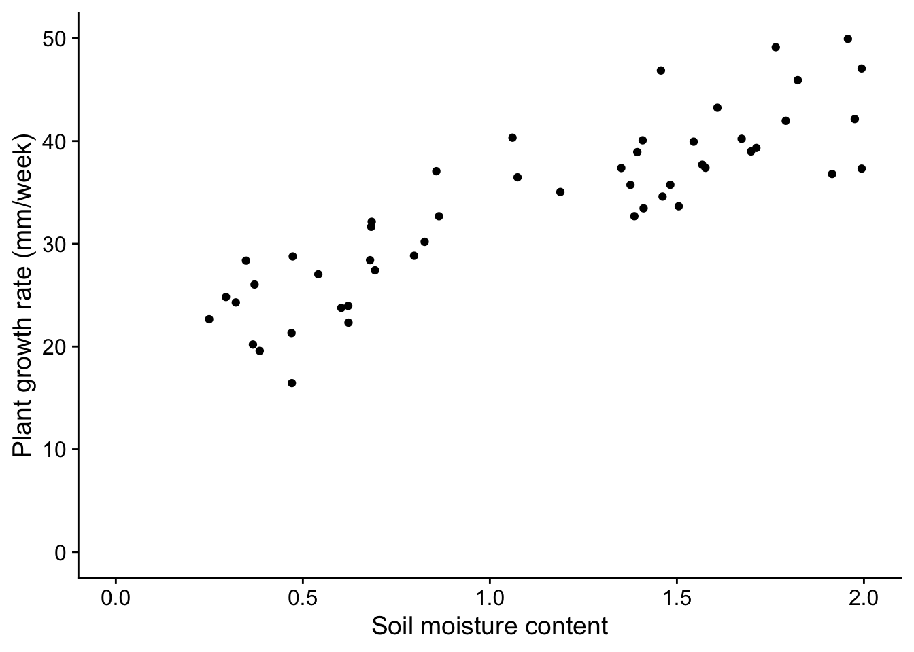
From the plot, we note that:
- there is an upward trend that is plausibly linear within this range of soil misture content. The more moisture there is in the soil, the greater the growth rate of the plants appears to be.
- the variance of the data, that is the range of vertical spread is approximately constant for the whole range of soil moisture content. This is one of the key criteria that data must satisfy if we are to analyse them using a linear model such as simple linear regression.
- we can estimate the intercept and gradient of a best fit line just by looking at the plot. Roughly speaking, the moisture content varies from 0 to 2, while the growth rate rises from 20 to 50, a rise of about 30. Hence the gradient is about 30/2 = 15 mm/week, while the intercept is somewhere between 15 mm and 20 mm / week.
- this isn’t an especially pretty plot, but it is clear and it was quick to make. For this exploratory stage of the analysis, that is all we want.
It is always good practice to examine the data before you go on to do any statistical analysis. For all but the smallest data sets, that means plotting them.
Make a simple model using linear regression
We use the function lm() to do this, and we save the results in an object to which we give the name model_pgr. This function needs a formula and some data as its arguments:
Code
model_pgr <- lm(plant.growth.rate ~ soil.moisture.content, data = plants)This reads: ‘Fit a linear model, where we hypothesize that plant growth rate is a function of soil moisture content, using the variables from the plants data frame.’
Check assumptions
Before we rush into interpreting the output of the model, we need to check whether it was valid to use a linear model in the first place. Whatever the test within which we are using a linear model, we should do the necessary diagnostic checks at this stage.
You can do this using tests designed for the purpose such as the Shapiro-Wilk test, but I prefer to do it graphically, using a function autoplot() from the package ggfortify. You give this the model we have just created using lm() and it produces four very useful graphs. I suggest that, after once installing ggfortify you include the line library(ggfortify) at the start of every script.
Here is how you use it:
Code
autoplot(model_pgr, smooth.colour = NA) + theme_cowplot()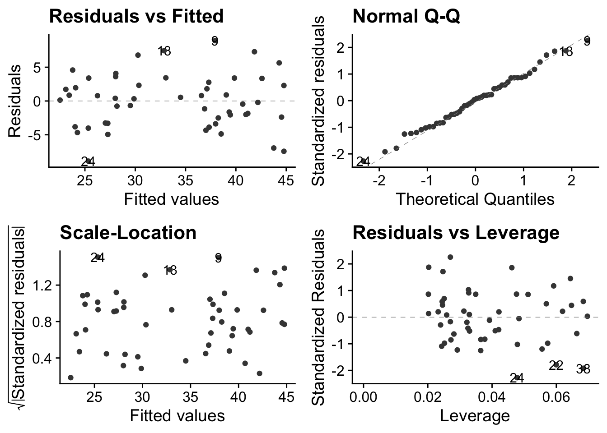
The theme_cowplot() part is not necessary, but it gives the plots a nice look, so why not?
These plots are all based around the `residuals’, which is the vertical distance between observed values and fitted values ie between each point and the best fit line through the points - the line which the linear model is finding for us, by telling us its intercept and gradient.
Note that in simple linear regression, the best fit line is the one that minimises the sum of the squared residuals.
So what do these plots mean?
- Top-left: This tells you about the structure of the model. Was it a good idea to try to fit a straight line to the data? If not, for example because the data did follow a linear trend, then there will be humps or troughs in this plot.
- Top-right: This evaluates the assumption of normality of the residuals. The dots are the residuals and the dashed line is the expectation under the normality assumption. This is a much better way to check normality than making a histogram of the residuals, especially with small samples.
- Bottom-left: This examines the assumption of equal variance of the residuals. A linear model assumes that the variance is constant over all predicted values of the response variables. There should be no pattern. Often, however, there is. With count data, for example, the variance typically increases with the mean.
- Bottom-right: This detects leverage - which means points that have undue influence on the gradient of the fitted line, and outliers. If you have outliers in your data, you need to decide what to do with them.
In the case of these data, we are good to go! There is no discernible pattern in either of the left-hand plots, the qq-plot is about as straight as you ever see with real data, and there are no points exerting undue high influence.
Interpretation of the model
Now that we have established that the data meet the criteria required for the model to be valid, we can go ahead and inspect its output. We will do this using two tools that we also use for every other general linear model we implement (t-test, ANOVA etc). These are anova() and summary()
Let us first use anova():
Code
anova(model_pgr)Analysis of Variance Table
Response: plant.growth.rate
Df Sum Sq Mean Sq F value Pr(>F)
soil.moisture.content 1 2521.15 2521.15 156.08 < 2.2e-16 ***
Residuals 48 775.35 16.15
---
Signif. codes: 0 '***' 0.001 '**' 0.01 '*' 0.05 '.' 0.1 ' ' 1The F value here is an example of a ‘test statistic’, a number that a test calculates from the data, from which it is possible to further calulate how likely it is that you would have got the data you got if the null hypothesis were true. F statisics pop up in various statistical tests. They are always the ratio of two variances. In this case it is the ratio of the variation in the data that is explained by the explanatory variable to the leftover variance. The bigger it is, the better the job that the explanatory variable is doing at explaining the variation in the dependent variable, and the smaller the chance that you would have got a ratio this big if the null hypothesis were true. The p value, which here is effectively zero, is the chance you would have got an F value this big or bigger from the data in the sample if in fact there were no relationship between plant growth rate and soil moisture content. If the p value is small (and by that we usually mean less than 0.05) then we can reject the null hypothesis that there is no relationship between plant growth rate and soil moisture content.
Hence, in this case, we emphatically reject the null: there is clear evidence that plant growth rate is at least in part explained by soil moisture content.
Now we use the summary() function:
Code
summary(model_pgr)
Call:
lm(formula = plant.growth.rate ~ soil.moisture.content, data = plants)
Residuals:
Min 1Q Median 3Q Max
-8.9089 -3.0747 0.2261 2.6567 8.9406
Coefficients:
Estimate Std. Error t value Pr(>|t|)
(Intercept) 19.348 1.283 15.08 <2e-16 ***
soil.moisture.content 12.750 1.021 12.49 <2e-16 ***
---
Signif. codes: 0 '***' 0.001 '**' 0.01 '*' 0.05 '.' 0.1 ' ' 1
Residual standard error: 4.019 on 48 degrees of freedom
Multiple R-squared: 0.7648, Adjusted R-squared: 0.7599
F-statistic: 156.1 on 1 and 48 DF, p-value: < 2.2e-16This gives us estimates of the intercept (19.348) and gradient (12.750) of the best fit line through the data. The null hypothesis is that both these values are zero, and the p-value is our clue as to whether we can reject this null. Here, in both cases, we clearly can.
We also see the Adjusted R-squared value of 0.7599. This is the proportion of the variance in the dependent variable that is explained by the explanatory variable. Thus it can vary between 0 and 1. A large value like this indicates that soil moisture content is a good predictor of plant growth rate.
Back to the figure
Typically, a final step in our analysis involves including the model we have fitted into the original figure, if that is possible in a straightforward way. In the case of simple linear regression, it is. It means adding a straight line with the intercept and gradient displayed by the summary() function. We do this by adding a line geom_smooth(method = "lm") to our plot code:
Code
plants |>
ggplot(aes(x = soil.moisture.content, y = plant.growth.rate)) +
geom_point() +
geom_smooth(method = "lm") +
labs(x = "Soil moisture content",
y = "Plant growth rate (mm/week)") +
xlim(0, 2) +
ylim(0, 50) +
theme_cowplot()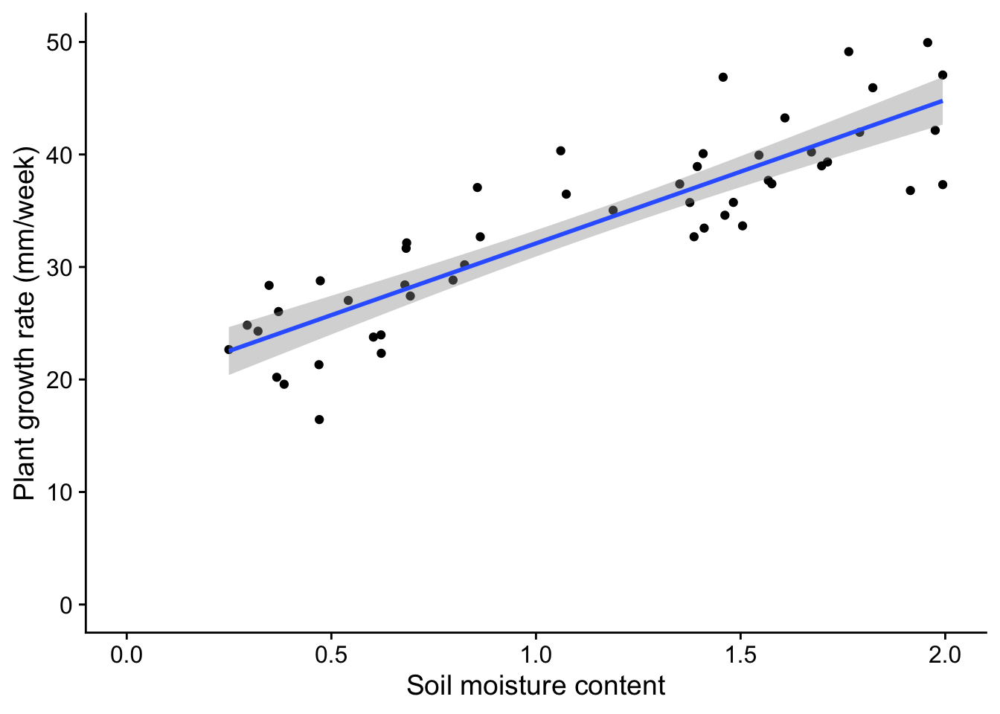
This gives both a straight line and the ‘standard error’ of that line - meaning, roughly speaking, the wiggle room within which the ‘true’ line , for the population as opposed to this sample drawn from it, probably lies.
Report the result
We would likely want to include this plot in our report, along with a statement like:
We find evidence for a linear increase in plant growth rate with soil moisture content (p<0.001), with an additional 12.75 mm of growth per unit increase in soil moisture content.
Conclusion
We have carried out a simple linear regression on continuous data. This is an example of a general linear model. We first plotted the data, then we used lm() to fit the model. Next we inspected the validity of the model using autoplot. We then inspected the model itself using first anova() then summary(). Finally we included the output of the model on the plot, in this case by adding to it a straight line with the intercept and gradient determined by the regression model, and reported the result in plain English.
Simple linear regression - ocean pH
In this second example we provide. the script but leave you to interpret the outcome of each step. You can use the first example to help you do this.
Here we use data from Figure 5.20 of AR6, WG1 from the IPCC. It shows ocean pH measurements from a location (137\(^{\circ}\)E, 5\(^{\circ}\)N) in the western Pacific between 1980 and 2020.
Your task is to assess whether there is a significant linear trend in pH with time and if so to determiine the change in pH per year or per decade during the forty year period from 1980 to 2020.
Load packages
Load data
Code
Rows: 81
Columns: 2
$ year <dbl> 1984.121, 1985.171, 1986.066, 1987.060, 1987.488, 1988.058, 1989.…
$ pH <dbl> 8.100000, 8.097917, 8.086458, 8.102604, 8.071875, 8.098437, 8.095…Plot data
Code
pH |>
ggplot(aes(x = year, y = pH)) +
geom_point() +
labs(x = "Year",
y = "Ocean pH") +
scale_y_continuous(limits = c(8.0, 8.12), breaks=seq(8.0, 8.2, 0.02)) +
theme_cowplot()
Is there a linear trend?
Fit linear model
Code
pH_model <- lm(pH ~ year, data = pH)Check model validity
Code
autoplot(pH_model) + theme_cowplot()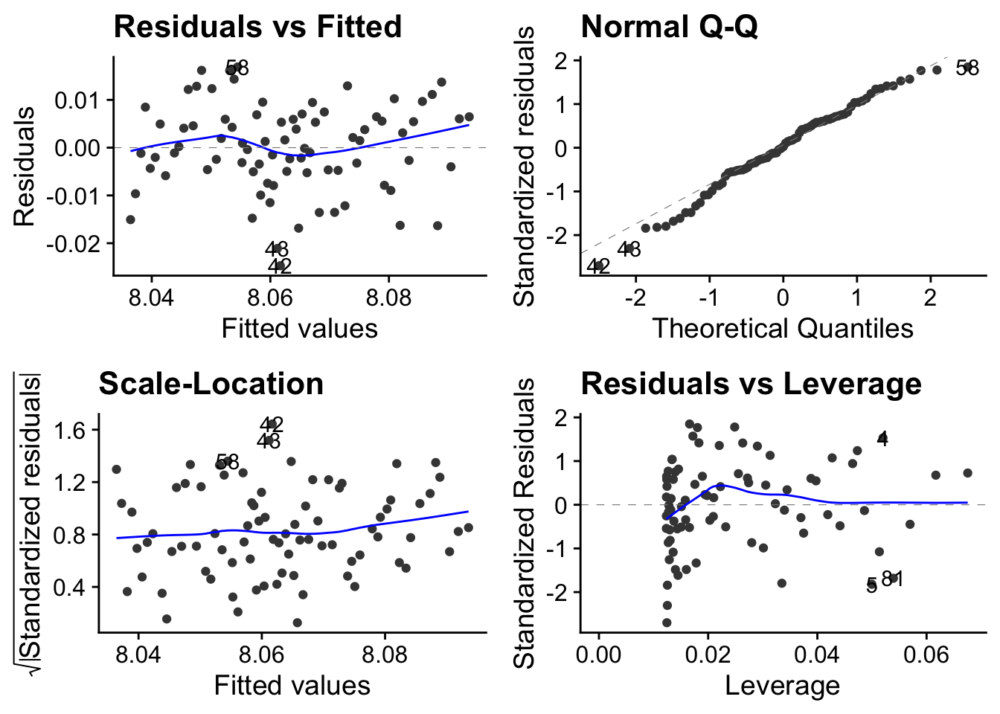
Is it reasonable to apply a linear model to these data? Remember that each of these plots tell you something about whether this is the case.
Inspect model
ANOVA
Code
anova(pH_model)Analysis of Variance Table
Response: pH
Df Sum Sq Mean Sq F value Pr(>F)
year 1 0.0169414 0.0169414 199.87 < 2.2e-16 ***
Residuals 79 0.0066962 0.0000848
---
Signif. codes: 0 '***' 0.001 '**' 0.01 '*' 0.05 '.' 0.1 ' ' 1Are we OK to reject the null hypothesis that pH does not change over this time period?
Summary
Code
summary(pH_model)
Call:
lm(formula = pH ~ year, data = pH)
Residuals:
Min 1Q Median 3Q Max
-0.0247092 -0.0049642 0.0002185 0.0060392 0.0168809
Coefficients:
Estimate Std. Error t value Pr(>|t|)
(Intercept) 11.234405 0.224330 50.08 <2e-16 ***
year -0.001583 0.000112 -14.14 <2e-16 ***
---
Signif. codes: 0 '***' 0.001 '**' 0.01 '*' 0.05 '.' 0.1 ' ' 1
Residual standard error: 0.009207 on 79 degrees of freedom
Multiple R-squared: 0.7167, Adjusted R-squared: 0.7131
F-statistic: 199.9 on 1 and 79 DF, p-value: < 2.2e-16What is the change in ocean pH per decade over the last four decades? Is this change statistically significant? Does the linear model account for much of the variance in the data?
Replot the data, model included
Code
pH |>
ggplot(aes(x = year, y = pH)) +
geom_point() +
geom_smooth(method = "lm", colour = "blue") + # add the line. Method ="lm" for a straight line.
labs(x = "Year",
y = "Ocean pH") +
scale_y_continuous(limits=c(8.0,8.12), breaks=seq(8.0,8.2,0.02)) + # fix limits and break points of y-axis
annotate(geom="text", x = 2015, y = 8.11, label = "137W, 5N", size = 5) + # measurement site
theme_cowplot()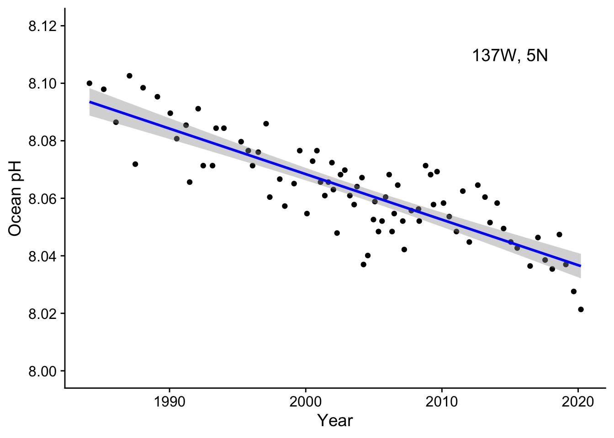
How would you report this result?
Detail of what is meant by the F value and R2
Code
p1<-pH |>
ggplot(aes(x = year, y = pH)) +
geom_point() +
# geom_smooth(method = "lm", colour = "blue") + # add the line. Method ="lm" for a straight line.
labs(x = "Year",
y = "Ocean pH") +
scale_y_continuous(limits=c(8.0,8.12), breaks=seq(8.0,8.2,0.02)) + # fix limits and break points of y-axis
theme_cowplot()
p1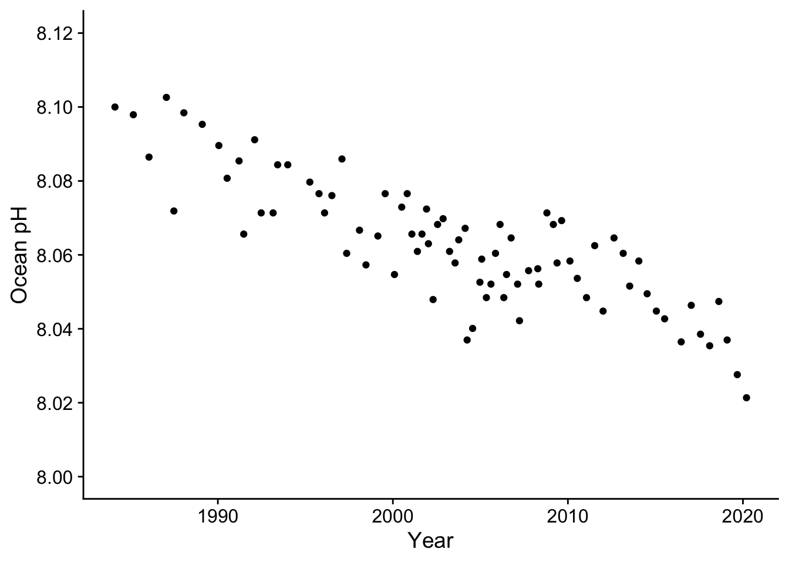
Code
p2 <- p1 +
geom_hline(yintercept = mean(pH$pH), colour = "red", linewidth = 1) +
geom_segment(aes(x = year, y = pH, xend = year, yend = grand_mean),linetype='dotted') +
annotate(geom="text", x = 2015, y = 8.11, label = "SST = 0.0236", size = 5)
p2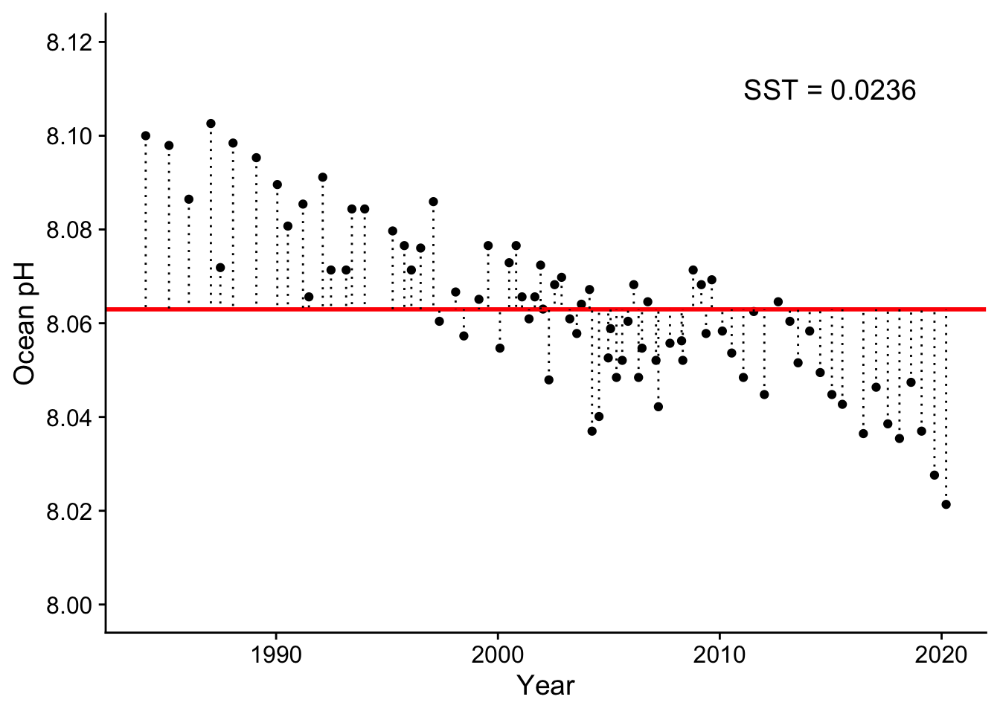
Code
min.year = min(pH$year)
max.year = max(pH$year)
new.x <- data.frame(year=pH$year)
new.y <- predict(pH_model, newdata = new.x)
add.these <-data.frame(new.x, new.y)
pH<-pH |>
mutate(new.y = new.y)
SSR = sum((pH$pH-pH$new.y)^2)
SSR[1] 0.006696223Code
p3 <- p1 +
geom_smooth(data = add.these, aes(x=year, y = new.y)) +
geom_segment(aes(x = year, y = new.y, xend = year, yend = pH), linetype='dotted') +
annotate(geom="text", x = 2015, y = 8.11, label = "SSR = 0.0067", size = 5)
p3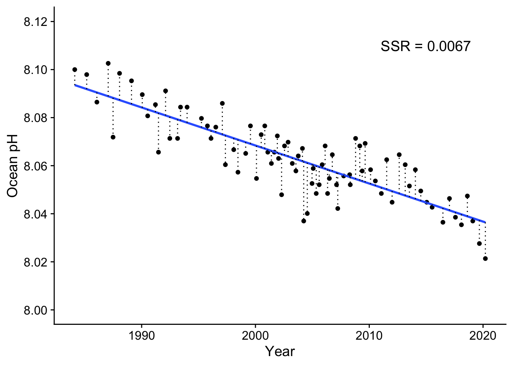
Code
SSM = sum((pH$new.y-grand_mean)^2)
SSM[1] 0.01694141Code
library(glue)
new_label <- {as.character(round(SSM,3))}
p4 <- p1 +
geom_smooth(data = add.these, aes(x=year, y = new.y)) +
# geom_hline(yintercept = mean(pH$pH), colour = "blue", linewidth = 1) +
geom_segment(aes(x = min(year), y = grand_mean, xend = max(year), yend = grand_mean), colour = "red") +
geom_segment(aes(x = year, y = new.y, xend = year, yend = grand_mean), linetype="dotted") +
annotate(geom="text", x = 2015, y = 8.11, label = paste("SSM = ",new_label), size = 5)
p4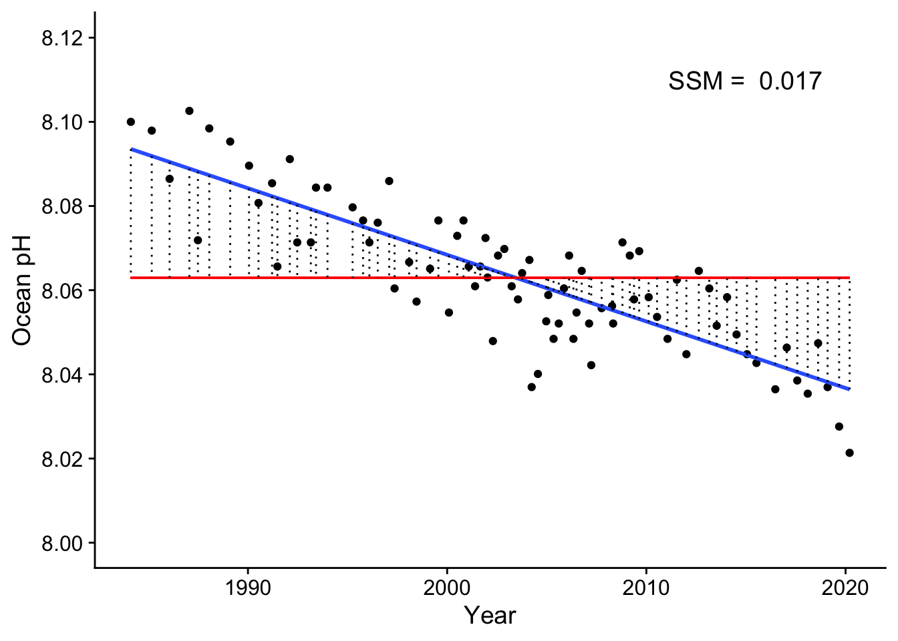
Code
RSQ = SSM/SST
RSQ[1] 0.7167135Simple linear regression: Body mass vs metabolic rate
In this example we consider variables that have a power law relationship, where the response variable \(y\) is proportional to the explanatory variable \(x\) raised to some power \(b\):
\[ y=ax^b \]
The goal of analysis of such data is often to find the index \(b\) as this is often a clue as to the mechanistic relationship origins of the response variable \(x\).
Code
filepath_power_law <- here("data", "jane12086-sup-0003-appendixs5.csv")
power_law_data <- read_csv(filepath_power_law) |>
clean_names()
glimpse(power_law_data)Rows: 1,498
Columns: 8
$ class <chr> "Mammalia", "Mammalia", "Aves", "Aves", "Aves", "Aves", "A…
$ order <chr> "Carnivora", "Carnivora", "Procellariiformes", "Procellari…
$ family <chr> "Odobenidae", "Odobenidae", "Diomedeidae", "Diomedeidae", …
$ genus <chr> "Odobenus", "Odobenus", "Diomedea", "Diomedea", "Diomedea"…
$ species <chr> "rosmarus", "rosmarus", "exulans", "exulans", "exulans", "…
$ study <chr> "Acquarone et al 2006", "Acquarone et al 2006", "Adams et …
$ m_kg <dbl> 1370.000, 1250.000, 7.400, 6.950, 8.900, 9.600, 9.400, 9.3…
$ fmr_k_j_day <dbl> 345000.00, 417400.00, 3100.00, 2898.00, 3528.00, 3881.00, …Code
# A tibble: 2 × 5
class n min.mass max.mass OMs
<chr> <int> <dbl> <dbl> <dbl>
1 Aves 894 0.0033 90.2 4
2 Mammalia 604 0.00528 1370 5We note that the minimum body masses are several orders of magnitude (powers of 10) less than the maximum values. The lightest bird is more than 10,000 times lighter than the heaviest bird, and for mammals the difference is even greater: the heaviest is more than 100,000 times the mass ofthe lightest. These huge differences in scale mean that it will likely not be helpful to plot two variables against each other on a linear scale
First plot variables on linear scale:
Code
power_law_data |>
ggplot(aes(x=m_kg, y= fmr_k_j_day)) +
geom_point() +
geom_smooth(method = "lm") +
labs(x="Body mass (kg)",
y="Metabolic rate (kJ/day)") +
# xlim(0,2) +
# ylim(0,50) +
theme_cowplot()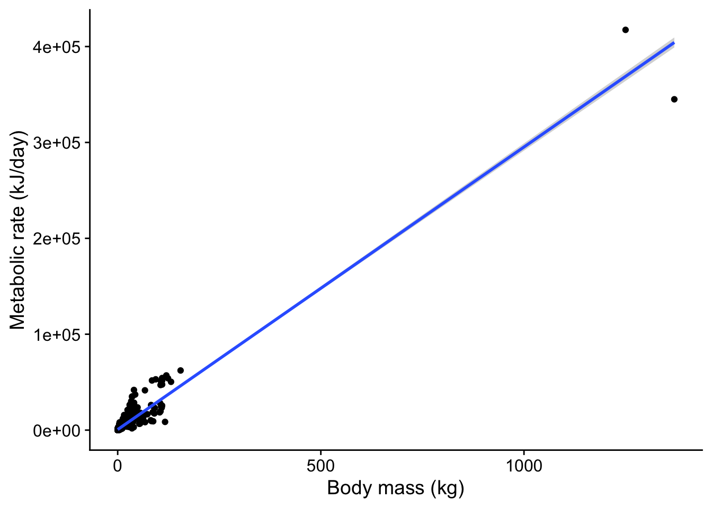
Massive outliers - try removing them then repeat. Filter out species that have mass over 500 kg (shame!)
Code
power_law_data |>
filter(m_kg < 50) |>
ggplot(aes(x=m_kg, y= fmr_k_j_day)) +
geom_point() +
geom_smooth(method = "lm") +
labs(x="Body mass (kg)",
y="Metabolic rate (kJ/day)") +
theme_cowplot()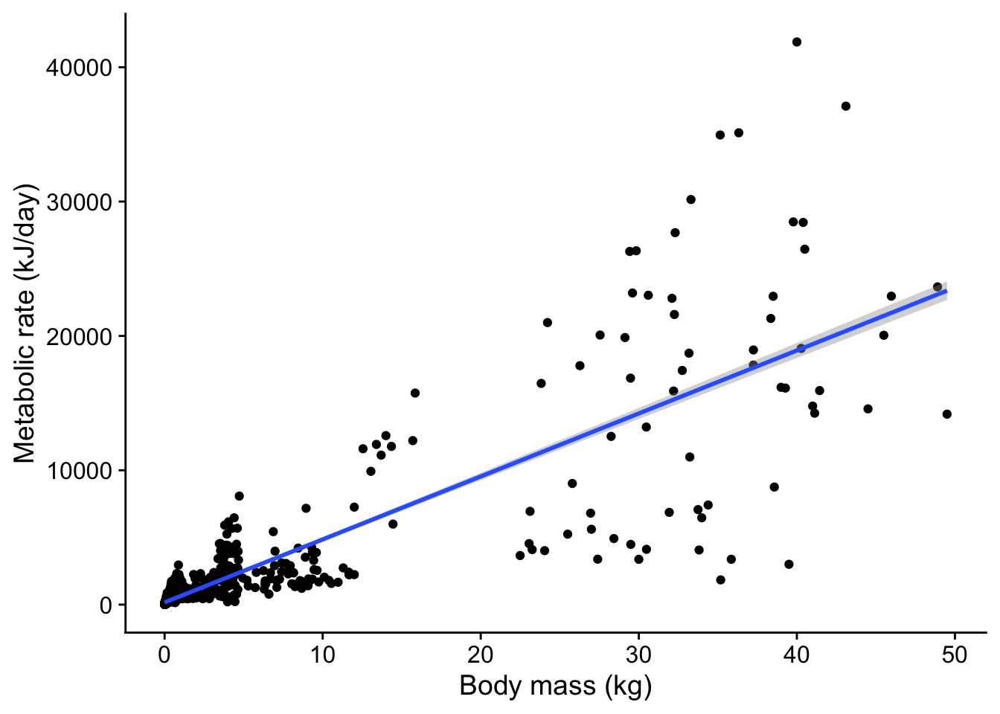
Code
power_law_data_augmented |>
ggplot(aes(x=log_bm, y= log_mbr,colour = class)) +
geom_point() +
geom_smooth(method = "lm") +
labs(x="log body mass (kg)",
y="Metabolic rate (kJ/day)") +
theme_cowplot()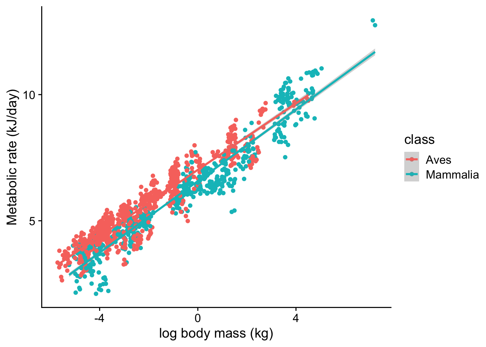
Code
autoplot(mammals.model) + theme_cowplot()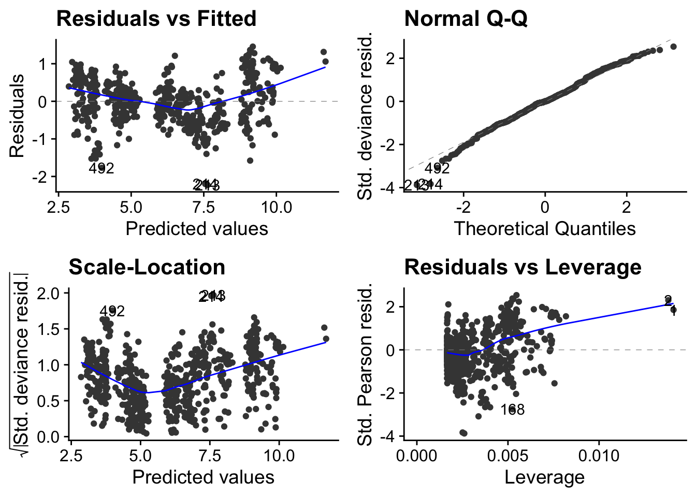
Code
autoplot(birds.model) + theme_cowplot()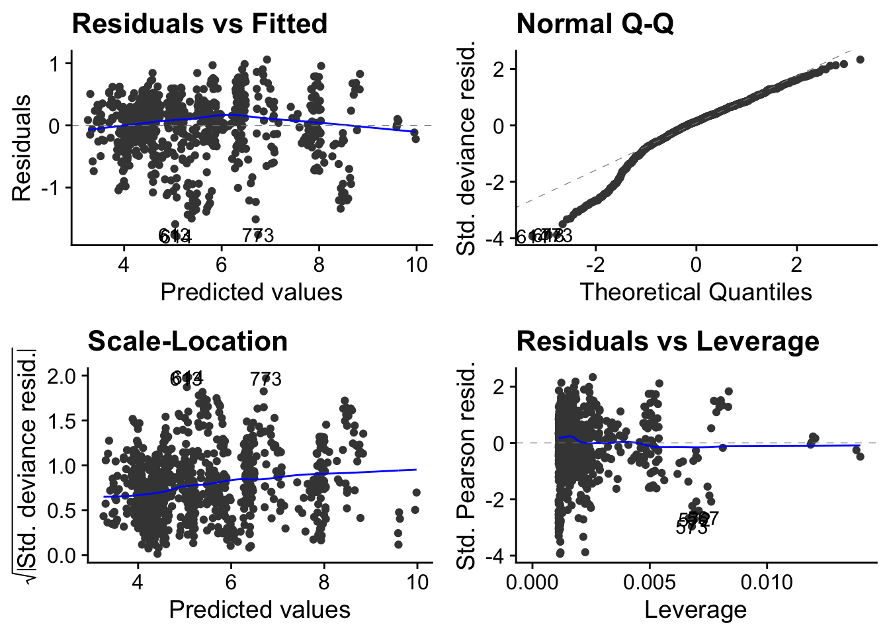
Code
shapiro.test(mammals.model$residuals)
Shapiro-Wilk normality test
data: mammals.model$residuals
W = 0.99237, p-value = 0.003489Code
shapiro.test(birds.model$residuals)
Shapiro-Wilk normality test
data: birds.model$residuals
W = 0.94634, p-value < 2.2e-16Code
anova(mammals.model)Analysis of Deviance Table
Model: gaussian, link: identity
Response: log_mbr
Terms added sequentially (first to last)
Df Deviance Resid. Df Resid. Dev F Pr(>F)
NULL 603 2732.74
log_bm 1 2533.9 602 198.87 7670.2 < 2.2e-16 ***
---
Signif. codes: 0 '***' 0.001 '**' 0.01 '*' 0.05 '.' 0.1 ' ' 1Code
summary(mammals.model)
Call:
glm(formula = log_mbr ~ log_bm, data = mammals)
Coefficients:
Estimate Std. Error t value Pr(>|t|)
(Intercept) 6.572452 0.024052 273.26 <2e-16 ***
log_bm 0.708931 0.008095 87.58 <2e-16 ***
---
Signif. codes: 0 '***' 0.001 '**' 0.01 '*' 0.05 '.' 0.1 ' ' 1
(Dispersion parameter for gaussian family taken to be 0.3303504)
Null deviance: 2732.74 on 603 degrees of freedom
Residual deviance: 198.87 on 602 degrees of freedom
AIC: 1049.1
Number of Fisher Scoring iterations: 2Sample script
A notebook to do linear regression might look like the following, here written as a .Rmd notebook. For this to work you will need to work within a project, with the data in a sub-folder of that called “data”. Here, the data is taken to be a .csv file called mydata.csv, with two columns of data, one called x_values and the other called y_values. You need to change these to suit your own data.
To use this, open a new notebook of your own (File/New File/R Notebook), delete everything, paste in all the code below, then adapt the code as needed. Remember to save the notebook in your project scripts folder!
---
title: "Sensible title"
author: "your name"
date: "the date"
output: html_notebook
---
### load packages
```{r}
library(tidyverse)
library(here)
library(ggfortify)
library(cowplot)
```
### load data
```{r load_data}
filepath <- here("data", "mydata.csv")
mydata <- read_csv(filepath)
glimpse(mydata)
```
### plot the data
```{r}
mydata |>
ggplot(aes(x=x_values, y=y_values)) +
geom_point() +
labs(x = "X variable",
y = "Y variable") +
theme_cowplot()
```
### fit the model
```{r}
mydata.model <- lm (y_values ~ x_values, data = mydata)
```
### diagnostics
```{r}
autoplot(mydata.model)
```
### investigate the model
```{r}
anova(mydata.model)
```
```{r}
summary(mydata.model)
```
### replot the data, now with the model included
```{r}
mydata |>
ggplot(aes(x=x_values, y=y_values)) +
geom_point() +
geom_smooth(method="linear") +
labs(x = "X variable",
y = "Y variable") +
theme_cowplot()
```